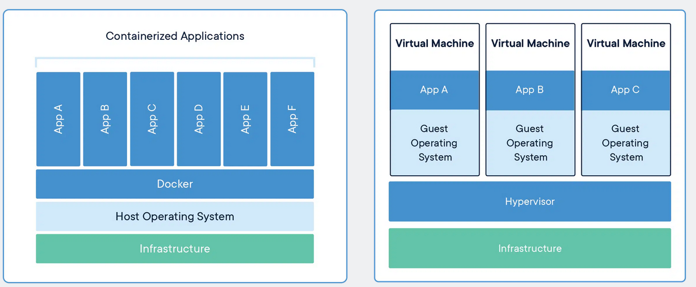
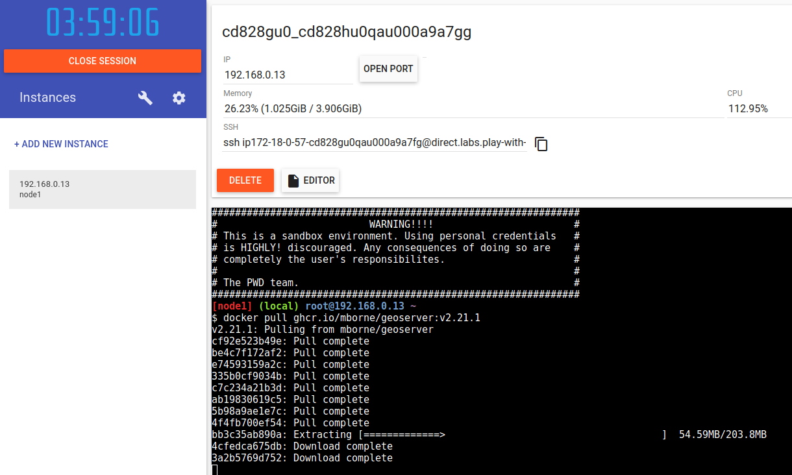

# DevOps avec des conteneurs * Principe de fonctionnement * Les principaux concepts * L'intérêt des conteneurs * L'utilisation d'images publiques * La construction d'une image * Le déploiement de l'application avec docker compose * La mise en oeuvre d'un reverse proxy * Que manque-t'il à ce stade? * L'orchestration de conteneur --- ## Principe de fonctionnement ### Partage de l'OS et isolation des processus Par rapport aux VM, nous soulignerons que les conteneurs docker sont basés sur des **fonctionnalités d'isolation du noyau Linux** : <div class="center">  <br /> (source : <a href="https://www.docker.com/resources/what-container/">www.docker.com - Comparing Containers and Virtual Machines</a>) </div> Le **démarrage d'un conteneur sera plus rapide que le démarrage d'une VM car** : * Démarrer un conteneur = démarrer un processus isolé * Démarrer une VM = démarrer un OS complet --- ## Principe de fonctionnement ### Utilisation d'un système de fichier par couche Avec docker, nous trouverons un **concept d'image fonctionnellement identique à celui auquel nous sommes habitué avec les VM** (ex : les `.box` téléchargés par `vagrant` dans la partie précédente). La deuxième optimisation notable de docker par rapport aux VM tiendra à l'**utilisation de système de fichier par couche ("overlay") pour matérialiser ces images**. Nous verrons que ceci permet à docker d'**optimiser le téléchargement et la construction des images avec des mécanismes de cache**. --- ## Principe de fonctionnement ### La surcouche docker Les mécanismes d'isolation ne sont pas nouveaux dans le noyau Linux (voir [LXC - LinuX Containers](https://fr.wikipedia.org/wiki/LXC) et [cgroups](https://fr.wikipedia.org/wiki/Cgroups)). [Les systèmes de fichiers par couches non plus](https://www.adaltas.com/fr/2021/06/03/linux-overlay-filesystem-docker/). Docker apporte par contre un ensemble cohérent **de concepts et d'outils donnant un cadre pour construire et déployer efficacement des applications** en s'appuyant sur ces mécanismes. --- ## Les principaux concepts (1/3) ### Vue d'ensemble des concepts L'utilisation de docker amènera en effet à manipuler plusieurs concepts : * Les **images** qui sont fonctionnellement équivalentes aux images de VM * Les `Dockerfile` qui décrivent la construction d'une image à partir d'une image de base et d'instructions. * Les **dépôts d'images (*registry*)** qui permettent de télécharger et stocker des images. * Les **conteneurs** qui sont des instances des images se comportant comme des VM grace à des mécanismes d'**isolation**. * Les **volumes** qui permettent d'externaliser les données des **conteneurs** ("montage de disque") * Les **réseaux** qui permettent la communication entre les conteneurs. * Le **démon docker** qui met à disposition [une API pour gérer les conteneurs, images, volumes, réseaux,...](https://docs.docker.com/engine/api/v1.41/). * L'[exécutable docker](https://docs.docker.com/engine/reference/commandline/cli/) qui est un client de l'API permettant de manipuler les images, les conteneurs, les volumes, les réseaux,... --- ## Les principaux concepts (2/3) ### Découvrir ces concepts par la pratique Il nous faudrait plusieurs séances pour un cours visant à vous apprendre à utiliser docker. Nous allons nous contenter ici de découvrir ces concepts en reprenant le cas pratique du déploiement de GeoStack. Pour approfondir sur cette technologie, vous pourrez vous appuyer sur les ressources suivantes : * [docs.docker.com - Docker overview](https://docs.docker.com/get-started/overview/) * [container.training](https://container.training/) * [mborne/docker-devbox](https://github.com/mborne/docker-devbox/#mbornedocker-devbox) qui est un de mes terrains de jeu pour progresser sur différentes technologies dont docker et Kubernetes --- ## Les principaux concepts (3/3) ### Utilisez un bac à sable! Le site [labs.play-with-docker.com](https://labs.play-with-docker.com/) vous permettra de faire vos premiers tests en ligne : <div class="center">  </div> En alternative, vous pourrez aussi assez facilement installer docker sur une VM Linux. > **Évitez d'installer directement le démon docker directement sur un poste branché sur le réseau de votre école/entreprise** (il n'est pas trivial d'éviter les conflits d'IP entre docker et le réseau local, de faire cohabiter docker avec un VPN et de [définir les bonnes options de sécurité](https://github.com/docker/docker-bench-security#docker-bench-for-security)) --- ## L'intérêt des conteneurs Nous verrons que le succès de docker doit beaucoup aux points suivants : * **L'image est un livrable universel** (plus besoin de choisir entre un .deb, .rpm, .war, .zip,...) * **L'image est définie as code** via le `Dockerfile` (donc **reconstructible**) * **L'image testée en DEV est celle qui s'exécute en PROD** * Le **démarrage** des conteneurs est **rapide**. * Les **téléchargements et constructions d'images sont optimisés**. * L'API permet la construction d'un écosystème avec par exemple : * Le reverse proxy [traefik](https://doc.traefik.io/traefik/) qui se configure automatiquement en inspectant les conteneurs (**introspection**) * L'IHM [portainer](https://www.portainer.io/) qui permet de démarrer des conteneurs (**réflexion**) --- ## L'utilisation d'images publiques Un autre élément joue beaucoup dans le succès de docker : [Le dépôt d'image public gratuit DockerHub](https://hub.docker.com/search?q=) où nous trouverons : * Des OS : [ubuntu](https://hub.docker.com/_/ubuntu), [debian](https://hub.docker.com/_/debian), [alpine](https://hub.docker.com/_/alpine),... * Des applications : [postgres](https://hub.docker.com/_/postgres), [mongodb](https://hub.docker.com/_/mongodb), [redis](https://hub.docker.com/_/redis),... Pour déployer GeoStack, nous trouverons : * Une image [postgis/postgis](https://hub.docker.com/r/postgis/postgis) pour le déploiement PostgreSQL * De [nombreuses images GeoServer](https://hub.docker.com/search?q=geoserver) --- ## La construction d'une image Pour illustrer la construction d'une image docker à partir d'un Dockerfile, nous allons faire l'exercice de créer nous même l'image pour GeoServer dans le dépôt [github.com - mborne/docker-geoserver](https://github.com/mborne/docker-geoserver#readme). Nous l'inspecterons ensemble et soulignerons que nous pourrons récupérer l'image comme suit pour la suite : ```bash docker pull ghcr.io/mborne/geoserver:v2.21.1 ``` --- ## Le déploiement de l'application avec docker compose Nous trouverons ici la démonstration correspondant à l'utilisation d'un fichier `docker-compose.yml` pour démarrer les deux applications à l'aide d'un simple `docker compose up -d` : [mborne/geostack-deploy - Déploiement de GeoStack avec docker compose](https://github.com/mborne/geostack-deploy/tree/master/docker#readme) > Nous soulignerons que sans "docker compose", nous serions amené à exécuter de nombreuses commandes docker. --- ## La mise en oeuvre d'un reverse proxy Nous soulignerons l'existence de [traefik](https://doc.traefik.io/traefik/) doté d'un mécanisme de [configuration automatique permis par la présence d'une API au niveau de docker](https://doc.traefik.io/traefik/providers/docker/). En complément, nous constaterons : * La [capacité à traiter facilement la mise en oeuvre de TLS](https://doc.traefik.io/traefik/https/overview/) * Et [bien d'autres points tel la mise en eouvre de limite de nombres d'appel avec les middlewares](https://doc.traefik.io/traefik/middlewares/http/ratelimit/) --- ## Que manque-t'il à ce stade? En l'état, si cherchions à héberger GeoStack sur plusieurs machines, nous remarquerions que : * Les conteneurs sur **la machine A ne peuvent communiquer avec ceux de la machine B** * Les démons docker sur les machines ne se connaissent pas (un outil tel [traefik](https://doc.traefik.io/traefik/) devrait moissonner deux API distinctes) * Il nous serait délicat de mettre en oeuvre un volume partagé par les conteneurs sur les deux machines. --- ## L'orchestration de conteneur ### Introduction Pour répondre à cette problématique, nous trouverons des solutions d'orchestrateur de conteneurs permettant de **gérer des conteneurs sur plusieurs hôtes**. Il en existe plusieurs, dont [swarm](https://docs.docker.com/engine/swarm/) qui est intégrée à docker et qui permettrait par exemple de : * [Créer un cluster entre les machines vagrantbox-1; vagrantbox-2 et vagrantbox-3](https://docs.docker.com/engine/swarm/swarm-tutorial/create-swarm/) * [Déployer GeoStack sous forme d'un service sur ce cluster](https://docs.docker.com/engine/swarm/swarm-tutorial/deploy-service/) (1) Nous avons une première solution pour exécuter nos conteneurs sur plusieurs machines mais il existe une solution plus riche : Kubernetes. > Le développement de swarm à amené à l'ajout d'un driver réseau "overlay" permettant la communication des conteneurs entre plusieurs machines (`docker network create --driver overlay geostack`) --- ## L'orchestration de conteneur ### Kubernetes Nous ne pourrons pas rentrer dans les détails, mais nous soulignerons que Kubernetes amène une [API de contrôle de l'exécution des conteneurs à l'échelle d'un cluster](https://container.training/kube-selfpaced.yml.html#85). * Une **API avec une approche déclarative** (on spécifie en YAML le nombre de conteneurs attendus, Kubernetes se charge de les démarrer) * Une architecture réseau permettant par défaut la communication entre les conteneurs : * Un réseau de type overlay est présent à l'échelle du cluster * Il n'est plus nécessaire de partager explicitement des réseaux --- ## L'orchestration de conteneur ### Kubernetes Nous soulignerons que Kubernetes amène : * Une [API riche en concepts](https://kubernetes.io/docs/concepts/) * Une API extensible permettant l'introspection (utilisée par [traefik](https://doc.traefik.io/traefik/providers/kubernetes-ingress/) cette fois à l'échelle d'un cluster) * Une API permettant la réflexion qui peut être illustrée par : * [ArgoCD](https://argo-cd.readthedocs.io/en/stable/) qui se charge de déployer les autres applications au sein d'un cluster Kubernetes. * [zalando/postgres-operator](https://github.com/zalando/postgres-operator#getting-started) qui se charge de gérer un cluster PostgreSQL dans Kubernetes. Dans le cadre de ce cours, nous remarquerons que l'API Kubernetes permet de **séparer les responsabilités entre les DEV et les OPS**.